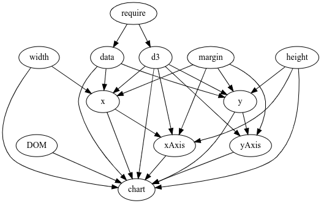

viewof x = Inputs.range([0, 255], {step: 1})Articulation de différents langages (R, JavaScript et Python) pour la géovisualisation avec Quarto
Atelier Sageo, Québec, Juin 2023
Observable JavaScript
Observable Kezako ?
L’Observable javascript {ojs} est un ensemble d’améliorations apportées à vanilla JavaScript créé par Mike Bostock (également auteur de D3). Observable JS se distingue par son exécution réactive, qui convient particulièrement bien à l’exploration et à l’analyse interactives des données.


Observable est aussi une startup fondée par Mike Bostock et Melody Meckfessel, qui propose une plateforme 100% en ligne (https://observablehq.com) pour concevoir, partager et diffuser des visualisations de données.

Observable c’est donc aussi C’est aussi une plateforme web qui héberge des notebooks computationnels sur la visualisation de données.
üëâ Objectif : faire collaborer une communaut√© autour de la visualisation de donn√©es.
Observable dans Quarto
Le runtime d’Observable est Open Source et est utilisé dans Quarto.
Dans Quarto, toutes les instructions s’écrivent dans des chunks {ojs}
```{ojs}
```On peut paramétrer l’affiche et/ou l’execution du code avec //| echo et //| eval.
```{ojs}
//| echo: false
//| eval: true
```NB : Contrairement aux chunks R et Python, le code s’execute just in time dans le navigateur web une fois le notebook généré. Seul l’export html est donc pris en compte.
Principes
Le langage JavaScript n’a pas du été conçu pour l’analyse de données. Mais, gros point fort, on a tous un navigateur web et JavaScript tourne sur toutes les machines. Le but : bâtir une évolution du langage JavaScript pour en faire un langage adapté à l’analyse et la visualisation de données sur le web.
üëâ Des biblioth√®ques pr√©charg√©es üìä
OJS c’est du JavaScript + plein de bibliothèques pré chargées :
| Symbol | Name | Version |
|---|---|---|
| _ | Lodash | 4.17.21 |
| aq | Arquero | |
| Arrow | Apache Arrow | 4.0.1 |
| d3 | D3.js | |
| dot | Graphviz | 0.2.1 |
| htl | Hypertext Literal | |
| Inputs | Observable Inputs | |
| L | Leaflet | |
| mermaid | Mermaid | 9.1.6 |
| Plot | Observable Plot | |
| SQLite | SQL.js | 1.7.0 |
| topojson | TopoJSON Client | 3.1.0 |
| vl | Vega, Vega-Lite | 5.22.1, 5.2.0 |
üëâ Chaque d√©but de ligne identifie une cellule ojs üôã
Chaque ligne définit une variable et une cellule qui doit être unique sur l’ensemble du document.
```{ojs}
a = 10 // une cellule
b = 20 // une cellule
``````{ojs}
c = a + b // une cellule
``````{ojs}
d = {
let a = 10
let b = 30
return a + b
} // Une cellule
```üëâ L‚Äôordre des cellules n‚Äôa pas d‚Äôimportance ü§Ø
On peut donc écrire ça
```{ojs}
result = val1 * val2
```avant ça
```{ojs}
val1 = 10
val2 = 20
```Le lien entre les cellules se fait de façon topologique et non de haut en bas.

üëâ Tout est r√©actif üî•
Dès lors qu’une cellule est modifiée, les cellules qui en dépendent sont modifiées également.
Pour modifier la valeutr d’une céllule, on utilise des Inputs (des composants proposés par OJS pour explorer les données) avec le mot clé viewof. Voir : https://observablehq.com/@observablehq/inputs
viewof y = Inputs.text({value: 30})viewof z = Inputs.radio([10, 100, 1000], {value: 10})x * y * zCe système est pratique pour modifier des visualisations de données.
Ici, un exemple avec un simple cercle dessiné en svg.
viewof color = Inputs.color({ label: "Couleur", value: "#4ab58c" })
viewof radius = Inputs.range([1, 50], { label: "Rayon", step: 1, value: 100 })
viewof position = Inputs.range([50, 950], { label: "Position", step: 1, value: 50 })html`<svg viewBox="0 0 1000 100" xmlns="http://www.w3.org/2000/svg">
<circle cx=${position} cy="50" r=${radius} fill="${color}"/>
</svg>`l’écosystème spatial avec Ojs
L’écosystème spatial de JavaScript est moins étoffé que ce qu’on peut trouver en Python ou en R. Mais on trouve quand même des choses intéressantes qui permettent de faire de la géomatique directement dans le navigateur web. Voici quelques exemples.
Les fonctionnalités spatiales de d3.js
d3-geo est le module spatial de d3. Il permet de gérer les projections cartographiques, les formes sphériques et la trigonométrie sphérique. Voir aussi d3-geo-projection. d3-delaunay est une bibliothèque rapide pour calculer le diagramme de Voronoï d’un ensemble de points bidimensionnels. Elle est basée sur Delaunator, une bibliothèque rapide pour calculer la triangulation de Delaunay en utilisant des algorithmes de balayage. Le diagramme de Voronoï est construit en reliant les circonférences des triangles adjacents dans la triangulation de Delaunay. d3-geo-voronoi est une adaptation de d3-delaunay sur la sphère.

TopoJSON est une extension de GeoJSON. La librairie permet de réaliser des opérations SIG basées sur la topologie (agrégation, voisins, simplification, etc.)
Les bibliothèques SIG

turf est une bibliothèque JavaScript pour l’analyse spatiale (de type SIG). Elle comprend les opérations spatiales traditionnelles, des fonctions d’aide pour la création de données GeoJSON, ainsi que des outils de classification des données et de statistiques. L’avantage de turf est d’être modulaire. On ne charge que ce dont on a besoin.

spl.js est une implémentation de SpatiaLite (et de ses amis : sqlite, geos, proj, rttopo) pour le navigateur.

geotoolbox est un outil javascript pour les géographes basé sur d3geo, topojson et jsts. Il permet de traiter simplement les propriétés geojson et fournit plusieurs opérations SIG utiles pour la cartographie thématique.

Gdals3.js est un portage des applications Gdal (gdal_translate, ogr2ogr, gdal_rasterize, gdalwarp, gdaltransform) vers Webassembly. Il permet de convertir des données géospatiales matricielles et vectorielles dans divers formats et systèmes de coordonnées.

proj4js est une bibliothèque JavaScript permettant de transformer les coordonnées d’un système de coordonnées à un autre, y compris les transformations de datum
Dataviz / cartographie

plot est la bibliothèque de visualisation de donnée développée par Observable (Mike Bostock et Philippe Rivière). Au départ pensée pour la visualisation de données statistiques, elle permet aujourd’hui de réaliser des cartes. Plot est disponible par défaut dans les cellules {ojs}.

vega-lite est un outil de visualisation mettant en œuvre une grammaire graphique, similaire à ggplot2. Cette bibliothèque est disponible par défaut dans les cellules {ojs}.

bertin est une bibliothèque écrite en JavaScript qui permet de réaliser des cartes thématiques pour le web. Sa conception vise à permettre aux utilisateurs de créer rapidement des cartes thématiques interactives sans forcement connaître le langage JavaScript.

Gridviz est une bibliothèque JavaScript basée sur WebGL développée par Julien Gaffuri et Joe Davies. Elle permet de visualiser des données carroyées (ou tout ensemble de données tabulaires avec une position x/y) dans le navigateur dans une grande variété de styles cartographiques.

go-cart-wasm est une bibliothèque JS/WASM permettant de réaliser des cartogrammes basés sur le flux (comme décrit dans “Gastner, Seguy, and More (2018).
Cartographie interactive avec Observable JavaScript
On souhaite à présent réaliser une carte interactive à l’échelle des municipalités.
Tout d’abord, on récpère les données depuis R (TODO)
munic = FileAttachment("geom/munic.geojson").json()Regardons la table attributaire
Inputs.table(munic.features.map(d => d.properties))Comme leaflet est disponible dans les cellules {ojs}, on peut directement afficher les géométries.
{
const container = yield htl.html`<div style="height: 500px;">`;
const map = L.map(container);
const layer = L.geoJSON(munic).addTo(map);
map.fitBounds(layer.getBounds(), { maxZoom: 9 });
L.tileLayer("https://{s}.tile.openstreetmap.org/{z}/{x}/{y}.png", {
attribution:
"© <a href=https://www.openstreetmap.org/copyright>OpenStreetMap</a> contributors"
}).addTo(map);
}Le fond de carte n’est pas assez simplifié. Donc on le simplifie et on le nettoie avec la bibiothèque geotoolbox.
geo = require("geotoolbox")munic2 = geo.rewind(geo.simplify(munic, { k: 0.02 }))Création de cartes thématiques
Pour créer des cartes thématiques, on peut utiliser la bibliothèque bertin
bertin = require("bertin")La fonction draw permet de réaliser n’importe quel type de carte.

Par défaut, la couche s’affiche simplement.
bertin.draw({layers:[{geojson: munic2, fill: "#d18de0"}]})Cartographie thématique
A présent, réalisons une carte de la population en 2022. Pour cela, on utilise le type bubble.
bertin.draw({
params: { margin: [-550, 0, 50, 0]}, // marges [Haut, droite, bas, gauche]
layers: [
{ type: "header", text: "Population en 2022", anchor: "start" }, // Titre
{ type: "minimap", x: 30, y: 185, width: 90, projection:"Polar" }, // Carte de localisation
{
id : "bub", // identifiant de la couche
type: "bubble", // couche de symboles proportionnels
geojson: munic2,
values: "POP_2022", // variable à cartographier
k: 30, // Rayon du plus gros cercle
leg_x: 500,
leg_y: 130,
leg_round: 0,
fill: "red",
fillOpacity:0.5,
tooltip: ["$MUS_NM_MUN", d => d.properties["POP_2022"]] // infobulle
},
{geojson: munic2, fill:"#CCC"}, // Couche des communes
]
})
A vous de jouer - Rendez la carte interactive avec {ojs}
Pour rendre la carte interactive, vous avez pouvez proposer des Inputs pour interagir avec l’utilisateur.
Ajoutez un Input de type radio pour définir la symbologie : bubble, square et spikes
viewof symbol = Inputs.radio([`a`, `b`, `c`], { label: `label`, value: `valeur par défaut`})Créez une liste déroulante pour changer la variable à cartographier. Pare exemple, la population et la surface.
viewof val = Inputs.select(["A", "B"], {label: "Select one"})Créez un slider pouyr faire varier la taille des cercles
viewof rayon = Inputs.range([`min`, `max`], { label: "label", step: 1, value: 30 })Modifiez la carte précédente pour prendre en compte ces valeurs.
Utilisez //| echo: false pour masquer le code.
Pour en savoir plus sur les inputs, voir : @observablehq/inputs
Solution
Les Inputs
viewof symbol = Inputs.radio([`bubble`, `square`], { label: `Symbol`, value: `bubble`})
viewof val = Inputs.select(["POP_2022", "AREA"], {label: "Variable"})
viewof rayon = Inputs.range([1, 100], { label: "Rayon", step: 2, value: 30 })Pour adater le titre de la carte en fonction de la variable, on peut faire
title = val == "AREA" ? "Superficie" : "Population en 2022"Et la carte
bertin.draw({
params: { margin: [-550, 0, 50, 0]},
layers: [
{ type: "header", text: title, anchor: "start" }, // ICI
{ type: "minimap", x: 30, y: 185, width: 90, projection:"Polar" },
{
type: symbol, // ICI
geojson: munic2,
values: val, // ICI
k: rayon, // ICI
leg_x: 500,
leg_y: 130,
leg_round: 0,
fill: "red",
fillOpacity:0.5,
tooltip: ["$MUS_NM_MUN", d => d.properties["POP_2022"]]
},
{geojson: munic2, fill:"#CCC"},
]
})A présent, on souhaite colorier les cercles en fonction de l’indice de vitalité économique.
A vous de jouer
Pour faire des varriations de couleurs (i.e. valeur), on utilise le type **choro** à l’intérieur de l’attribut fill de la couche à colorier. Ici, les cercles proportionnels.
fill : {type "choro", values: `votre variable`, colors: "RdYlBu"}Pour paramétrer, voir : bertin#choropleth & bertin-js-chropoleth
Solution
bertin.draw({
params: { margin: [-550, 0, 50, 0]},
layers: [
{ type: "header", text: title, anchor: "start" },
{ type: "minimap", x: 30, y: 185, width: 90, projection:"Polar" },
{
type: symbol,
geojson: munic2,
values: val,
k: rayon,
leg_x: 500,
leg_y: 130,
leg_round: 0,
fill: { // ICI
type: "choro",
values: "VIT_ECO",
colors: "RdYlBu",
leg_x:680,
leg_y:100,
leg_title:
"Vitalité économique",
leg_round: 0
},
fillOpacity:0.8,
tooltip: ["$MUS_NM_MUN", d => d.properties["VIT_ECO"]]
},
{geojson: munic2, fill:"#CCC"},
]
})Création de graphiques
Avec {ojs}, on va aussi pouvoir faire des graphiques avec la bibliothèque plot.
Tout d’abord, on récupère les noms des 20 communes les plus peuplées, classées par ordre décroissant de population.
communes = munic2.features
.map((d) => d.properties)
.sort((a, b) => d3.descending(a.POP_2022, b.POP_2022))
.map((d) => d.MUS_NM_MUN)
.slice(0, 20)On met en forme les données.
data = {
let arr = [];
communes.forEach((d) => {
let tmp = munic2.features
.map((d) => d.properties)
.find((x) => x.MUS_NM_MUN == d);
for (let i = 2001; i <= 2022; i++) {
arr.push({ year: i, pop: tmp["POP_" + i], com: d });
}
});
return arr;
}Puis on réalise le graphique avec plot en proposant de sélectionner une commune.
viewof commune = Inputs.select(communes, { label: "Commune" })
Plot.plot({
grid: true,
x: {
label: "Années →",
tickFormat: ""
},
y: {
label: `↑ Population (${commune})`
},
color: { legend: true },
marginLeft: 60,
marks: [
Plot.lineY(data.filter(d => d.com == commune), {
x: "year",
y: "pop",
stroke: "red",
strokeWidth: 2
})
]
})Cartographie de données raster